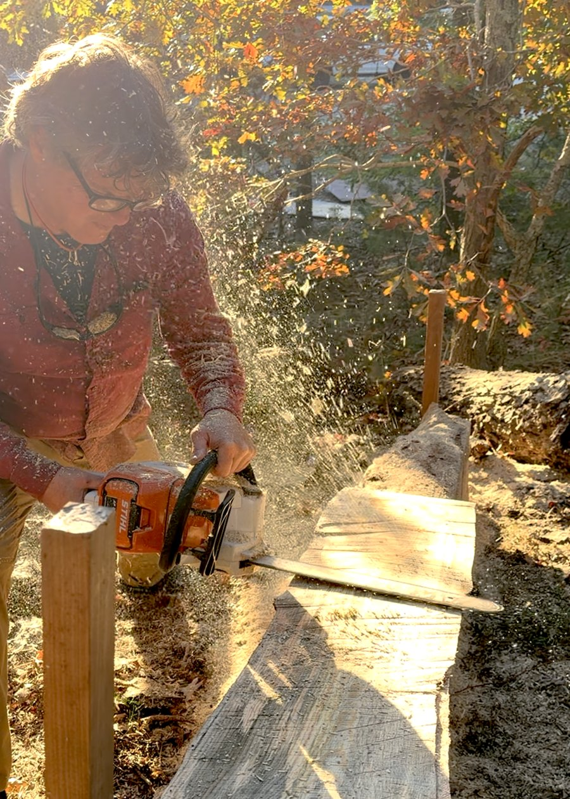
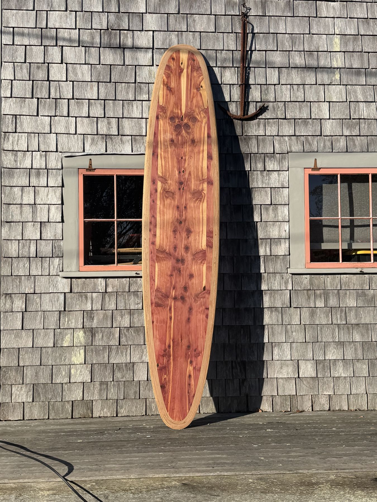
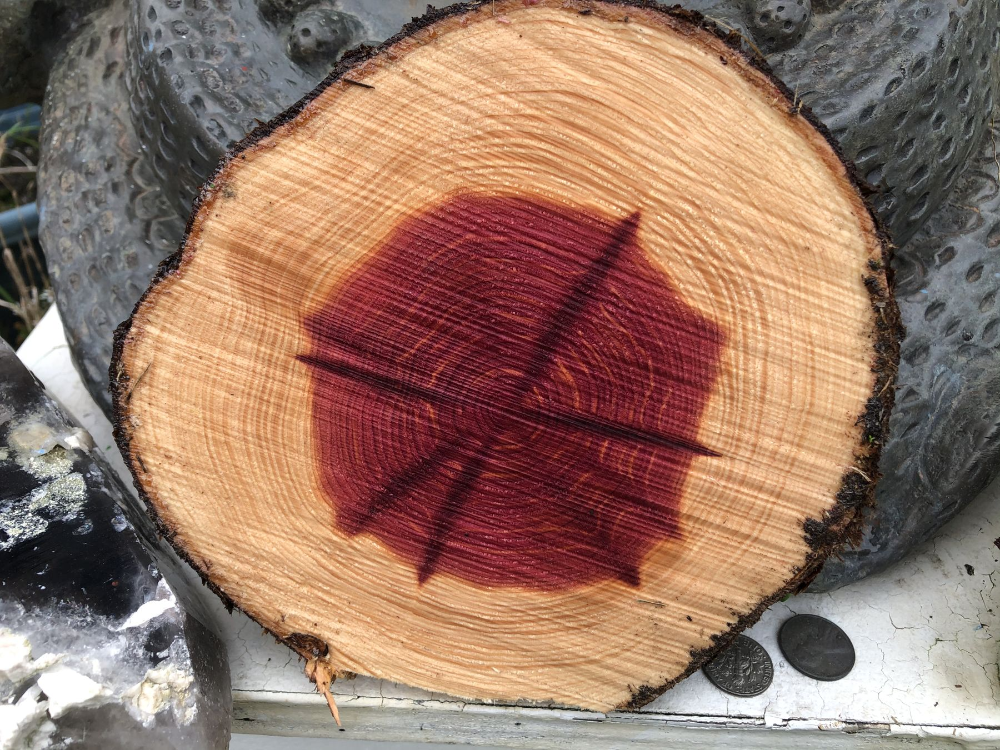
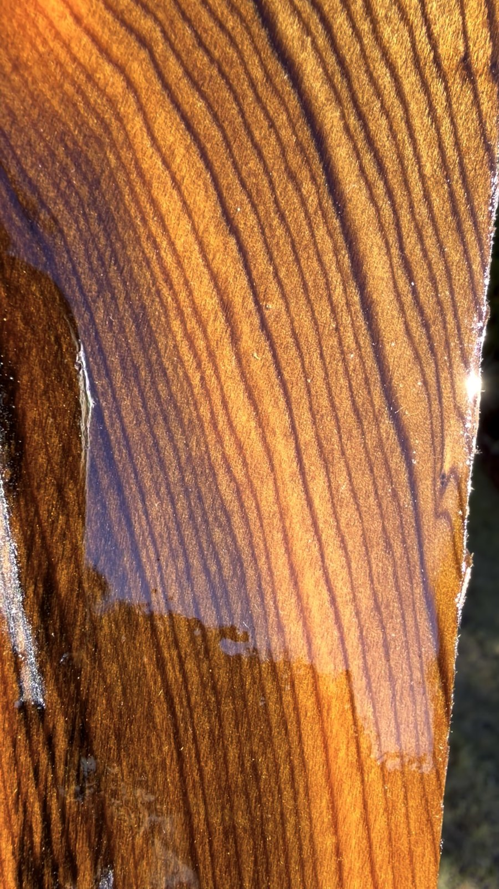
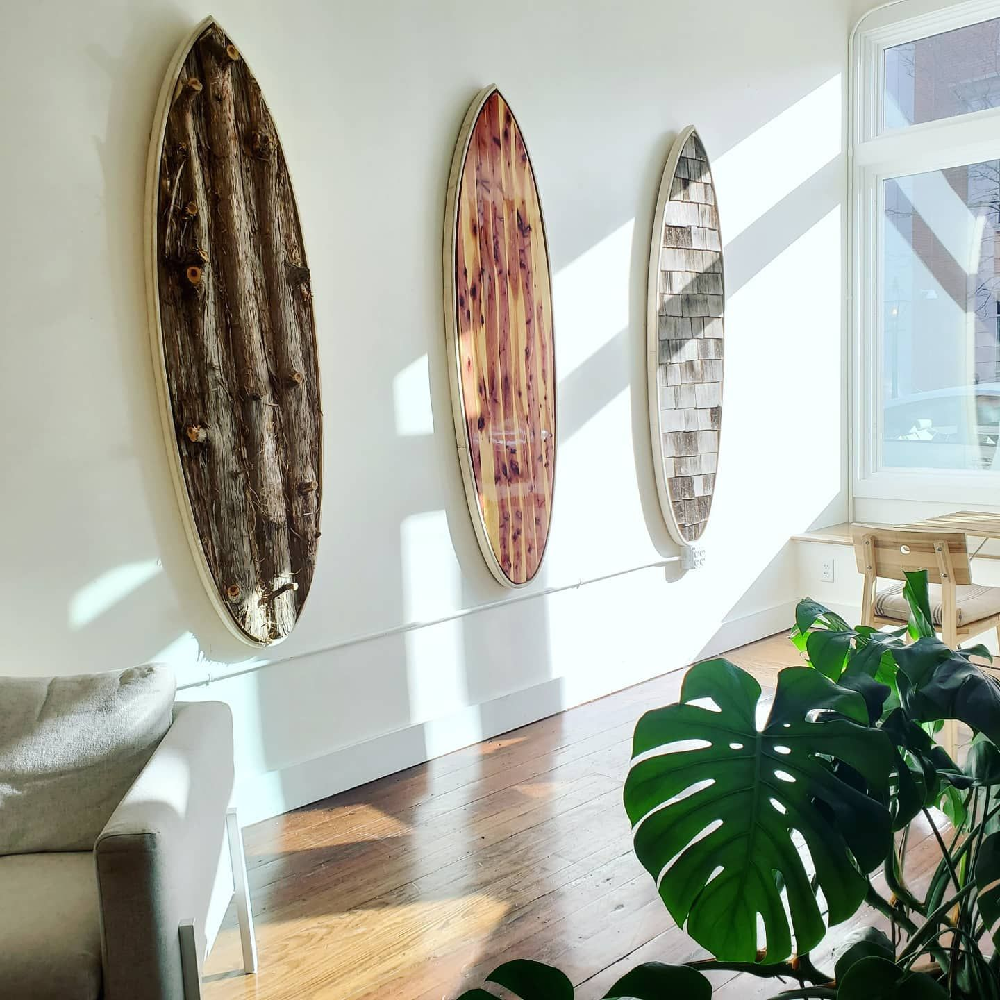
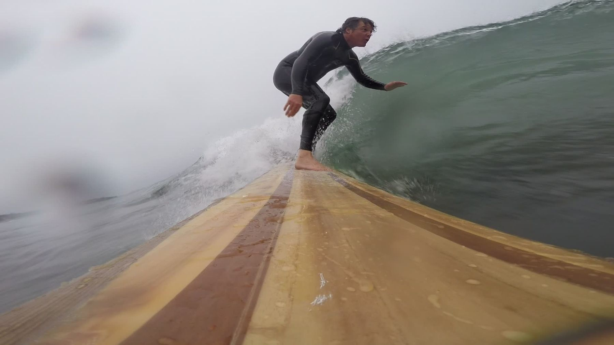
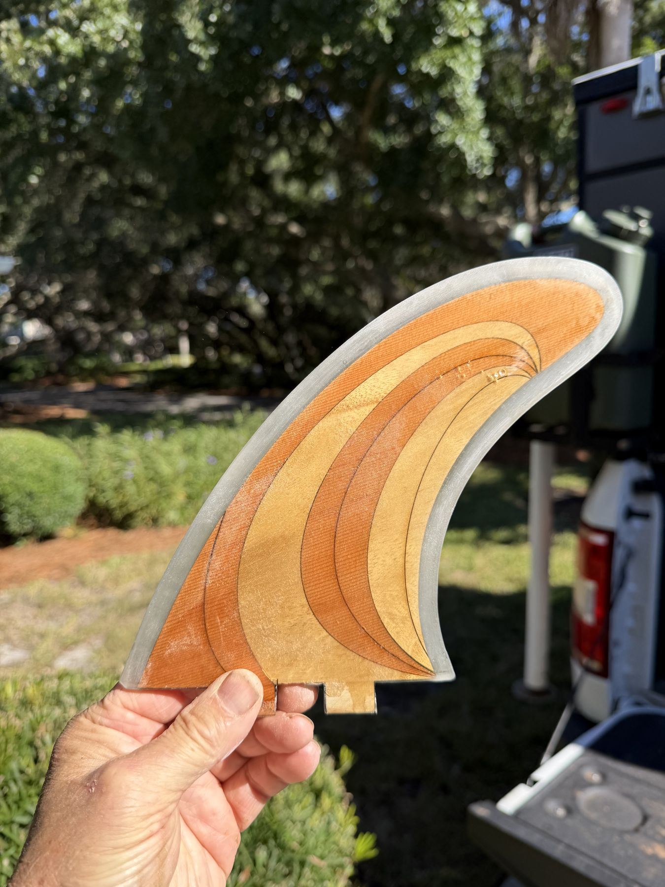
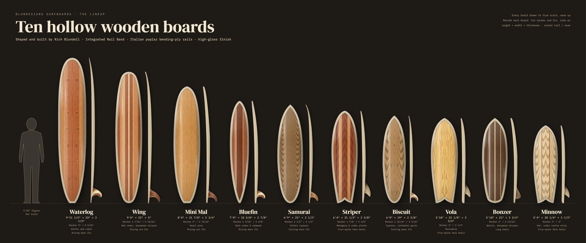
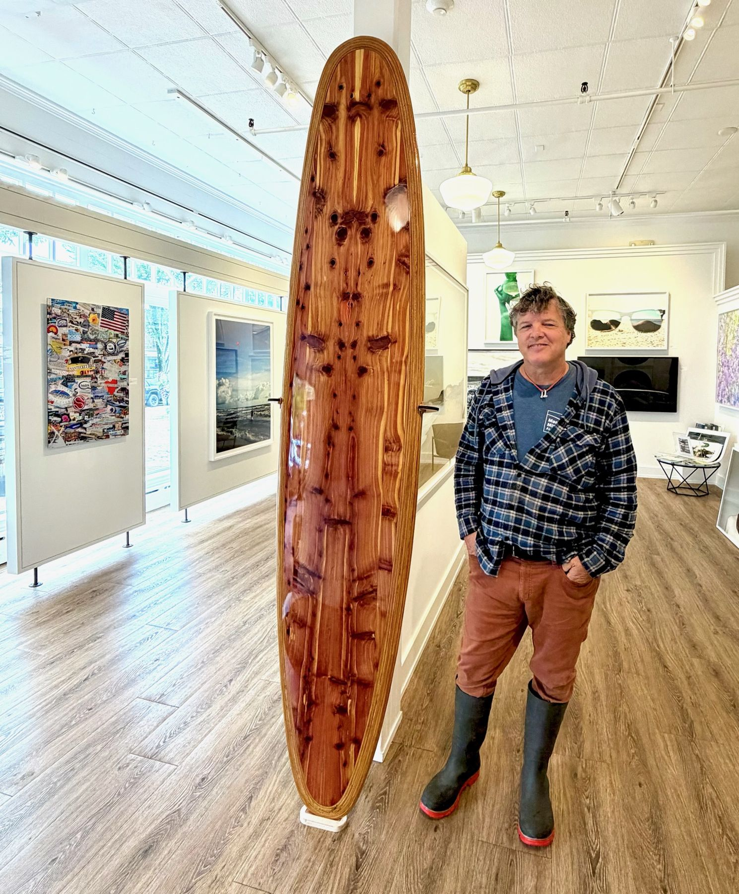

Tree to Sea
Rich finds his wood on his travels and adventures. Sometimes he cuts a dead tree and mills it himself with a chainsaw strapped to his back.
MILLED BY HANDOne-of-a-kind hollow wooden surfboards built from charismatic trees in special places. Functional surfboard sculptures, made to live in a home.

Each board carries the story of a deep ecological process that includes the history of the tree, the place it grew, and the builder. No two can ever be alike.

Rich finds his wood on his travels and adventures. Sometimes he cuts a dead tree and mills it himself with a chainsaw strapped to his back.
MILLED BY HAND
Trees brought down by storms or age, rescued before they were lost. This eastern red cedar from Truro became a set of boards in 2020.
RESCUED WOOD · TRURO
Old-growth trees about 1,000 years old that sank to the bottom of Florida rivers more than 100 years ago, taking on distinctive colour palettes and grain patterns. Two boards are being built from it now.
IN THE SHOP NOW Photo: Wilson Cypress Company dumping logs into the St. Johns River, Crows Bluff. State Archives of Florida, Florida Memory.
Old-growth heart pine, western and eastern red cedar, reclaimed barn boards and shipwreck planks. Each chosen for a grain pattern that cannot be repeated.
ONE OF ONEA thousand years of growth, a century under the river, and now a wave.



Rich Blundell has been designing and building hollow wooden surfboards since the early 2000s. His early boards were covered by the Associated Press and WoodenBoat. Today he is a natural historian and public thinker whose work on the story of life on Earth shapes every board he makes.
Rich is based on Nantucket and travels the world finding interesting places and charismatic trees. He builds in residence in each place, working with its trees and waters, so every board belongs to somewhere.

Features and profiles on Rich's boards and ideas, from the early hollow wooden boards to today.
A deep philosophy runs through the whole ecological life of each board. Rich expresses it through a word he coined, Oika, which names a triad of ideas: continuity, relationality and entanglement.
The life of the tree does not end when it falls. It carries on, through the mill and the shop, into the board and onto the wave.
A board is made of relationships: between a tree and the place it grew, the maker and the grain, the board and the water.
Tree, place, maker, wave and owner become part of one story that cannot be pulled apart.
Rich treats a board as a meeting between a tree and the ocean. He reads where the tree grew, how it fell and what the grain wants to do, then builds a hollow frame light and strong enough to surf. The method and its joinery are his own inventions.

On island ground, after a storm, or at the bottom of a river. Milled on site, often with a chainsaw mill carried in on his back.
The boards are dried, planed by hand and bookmatched so the grain mirrors down the centre of the deck.

A precise skeleton of ribs and stringer, trussed to be light and stiff. Glue only, no fasteners.

The rail is laid up course by course, then planed and sanded into one fair curve, guided by hand-made gauges.

You are invited to help design a custom fin for your board. Together you choose its shape, its woods and its inlay, so the fin carries your part of the story.

No fiberglass cloth. A deep, glassy high-gloss finish that lets the grain show. Custom mounting for display.

A hollow frame whose rail band locks into slotted rib ends. Rich's current method.
The Blundell Triplicate Truss: a web of three rounded voids per bay that keeps the frame light and stiff.
Rich's puzzle-tab splice. It fits so tight the joint clamps itself.
A custom fin designed with you and laminated from woods you choose together.
Builds, trees, shops and waves from Cape Cod, Martha's Vineyard, Key West and beyond. Click any photo to see it larger.
Rich's boards will be shown in Palm Beach this winter. He is establishing partnerships with a select group of interior designers and gallerists, and works directly with clients to create their perfect board, from the choice of tree to the way it hangs on the wall.
“On commissions I get a lot of joy out of envisioning with the client to create their perfect board. I really do enjoy delivering what people really want.”Rich Blundell
A board built for one client and one room, with its wood, its fin and its story chosen together.
Available boards for placement in client homes, showrooms and galleries.
Wallhangers by default, with custom mounting designed for the space.
